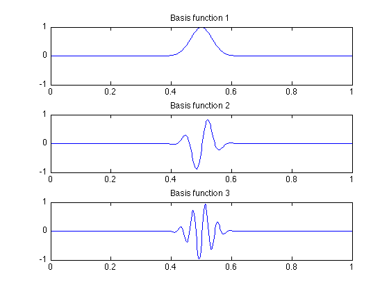
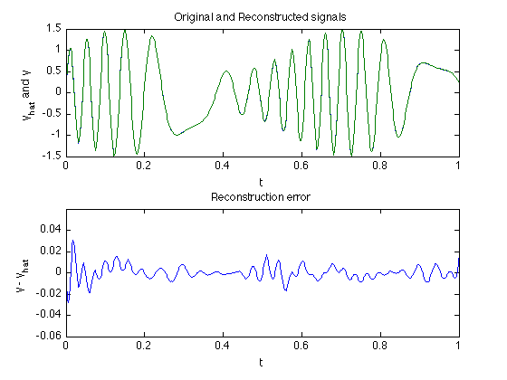
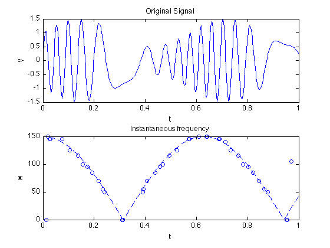

% Section 6.5.4 % Boyd & Vandenberghe "Convex Optimization" % Original by Lieven Vandenberghe % Adapted for CVX by Argyris Zymnis - 11/27/2005 % % Here we find a sparse basis for a signal y out of % a set of Gabor functions. We do this by solving % minimize ||A*x-y||_2 + ||x||_1 % % where the columns of A are sampled Gabor functions. % We then fix the sparsity pattern obtained and solve % minimize ||A*x-y||_2 % % NOTE: The file takes a while to run clear % Problem parameters sigma = 0.05; % Size of Gaussian function Tinv = 500; % Inverse of sample time Thr = 0.001; % Basis signal threshold kmax = 30; % Number of signals are 2*kmax+1 w0 = 5; % Base frequency (w0 * kmax should be 150 for good results) % Build sine/cosine basis fprintf(1,'Building dictionary matrix...'); % Gaussian kernels TK = (Tinv+1)*(2*kmax+1); t = (0:Tinv)'/Tinv; A = exp(-t.^2/(sigma^2)); ns = nnz(A>=Thr)-1; A = A([ns+1:-1:1,2:ns+1],:); ii = (0:2*ns)'; jj = ones(2*ns+1,1)*(1:Tinv+1); oT = ones(1,Tinv+1); A = sparse(ii(:,oT)+jj,jj,A(:,oT)); A = A(ns+1:ns+Tinv+1,:); % Sine/Cosine basis k = [ 0, reshape( [ 1 : kmax ; 1 : kmax ], 1, 2 * kmax ) ]; p = zeros(1,2*kmax+1); p(3:2:end) = -pi/2; SC = cos(w0*t*k+ones(Tinv+1,1)*p); % Multiply ii = 1:numel(SC); jj = rem(ii-1,Tinv+1)+1; A = sparse(ii,jj,SC(:)) * A; A = reshape(A,Tinv+1,(Tinv+1)*(2*kmax+1)); fprintf(1,'done.\n'); % Construct example signal a = 0.5*sin(t*11)+1; theta = sin(5*t)*30; b = a.*sin(theta); % Solve the Basis Pursuit problem disp('Solving Basis Pursuit problem...'); tic cvx_begin variable x(30561) minimize(sum_square(A*x-b)+norm(x,1)) cvx_end disp('done'); toc % Reoptimize problem over nonzero coefficients p = find(abs(x) > 1e-5); A2 = A(:,p); x2 = A2 \ b; % Constants M = 61; % Number of different Basis signals sk = 250; % Index of s = 0.5 % Plot example basis functions; %if (0) % to do this, re-run basispursuit.m to create A figure(1); clf; subplot(3,1,1); plot(t,A(:,M*sk+1)); axis([0 1 -1 1]); title('Basis function 1'); subplot(3,1,2); plot(t,A(:,M*sk+31)); axis([0 1 -1 1]); title('Basis function 2'); subplot(3,1,3); plot(t,A(:,M*sk+61)); axis([0 1 -1 1]); title('Basis function 3'); %print -deps bp-dict_helv.eps % Plot reconstructed signal figure(2); clf; subplot(2,1,1); plot(t,A2*x2,'--',t,b,'-'); axis([0 1 -1.5 1.5]); xlabel('t'); ylabel('y_{hat} and y'); title('Original and Reconstructed signals') subplot(2,1,2); plot(t,A2*x2-b); axis([0 1 -0.06 0.06]); title('Reconstruction error') xlabel('t'); ylabel('y - y_{hat}'); %print -deps bp-approx_helv.eps % Plot frequency plot figure(3); clf; subplot(2,1,1); plot(t,b); xlabel('t'); ylabel('y'); axis([0 1 -1.5 1.5]); title('Original Signal') subplot(2,1,2); plot(t,150*abs(cos(w0*t)),'--'); hold on; for k = 1:length(t); if(abs(x((k-1)*M+1)) > 1e-5), plot(t(k),0,'o'); end; for j = 2:2:kmax*2 if((abs(x((k-1)*M+j)) > 1e-5) | (abs(x((k-1)*M+j+1)) > 1e-5)), plot(t(k),w0*j/2,'o'); end; end; end; xlabel('t'); ylabel('w'); title('Instantaneous frequency') hold off;
Building dictionary matrix...done.
Solving Basis Pursuit problem...
Calling Mosek 9.1.9: 61625 variables, 502 equality constraints
------------------------------------------------------------
MOSEK Version 9.1.9 (Build date: 2019-11-21 11:32:15)
Copyright (c) MOSEK ApS, Denmark. WWW: mosek.com
Platform: MACOSX/64-X86
MOSEK warning 710: #1 (nearly) zero elements are specified in sparse col '' (505) of matrix 'A'.
MOSEK warning 710: #1 (nearly) zero elements are specified in sparse col '' (507) of matrix 'A'.
MOSEK warning 710: #1 (nearly) zero elements are specified in sparse col '' (509) of matrix 'A'.
MOSEK warning 710: #1 (nearly) zero elements are specified in sparse col '' (511) of matrix 'A'.
MOSEK warning 710: #1 (nearly) zero elements are specified in sparse col '' (513) of matrix 'A'.
MOSEK warning 710: #1 (nearly) zero elements are specified in sparse col '' (515) of matrix 'A'.
MOSEK warning 710: #1 (nearly) zero elements are specified in sparse col '' (517) of matrix 'A'.
MOSEK warning 710: #1 (nearly) zero elements are specified in sparse col '' (519) of matrix 'A'.
MOSEK warning 710: #1 (nearly) zero elements are specified in sparse col '' (521) of matrix 'A'.
MOSEK warning 710: #1 (nearly) zero elements are specified in sparse col '' (523) of matrix 'A'.
Warning number 710 is disabled.
Problem
Name :
Objective sense : min
Type : CONIC (conic optimization problem)
Constraints : 502
Cones : 30562
Scalar variables : 61625
Matrix variables : 0
Integer variables : 0
Optimizer started.
Presolve started.
Linear dependency checker started.
Linear dependency checker terminated.
Eliminator started.
Freed constraints in eliminator : 0
Eliminator terminated.
Eliminator - tries : 1 time : 0.00
Lin. dep. - tries : 1 time : 0.02
Lin. dep. - number : 0
Presolve terminated. Time: 0.22
Problem
Name :
Objective sense : min
Type : CONIC (conic optimization problem)
Constraints : 502
Cones : 30562
Scalar variables : 61625
Matrix variables : 0
Integer variables : 0
Optimizer - threads : 8
Optimizer - solved problem : the primal
Optimizer - Constraints : 502
Optimizer - Cones : 30562
Optimizer - Scalar variables : 61625 conic : 61625
Optimizer - Semi-definite variables: 0 scalarized : 0
Factor - setup time : 0.57 dense det. time : 0.00
Factor - ML order time : 0.00 GP order time : 0.00
Factor - nonzeros before factor : 1.26e+05 after factor : 1.26e+05
Factor - dense dim. : 0 flops : 9.84e+08
ITE PFEAS DFEAS GFEAS PRSTATUS POBJ DOBJ MU TIME
0 1.5e+00 1.0e+00 3.1e+04 0.00e+00 3.056200000e+04 0.000000000e+00 1.0e+00 1.16
1 1.9e-01 1.3e-01 1.4e+03 1.00e+00 3.820389713e+03 8.384295397e-02 1.3e-01 1.28
2 9.8e-03 6.6e-03 1.6e+01 1.00e+00 2.037854629e+02 3.417125965e+00 6.6e-03 1.43
3 3.6e-03 2.4e-03 3.6e+00 1.00e+00 8.224218219e+01 8.938249410e+00 2.4e-03 1.53
4 8.8e-04 5.9e-04 4.3e-01 1.00e+00 3.018097170e+01 1.216383545e+01 5.9e-04 1.68
5 1.9e-04 1.3e-04 4.2e-02 1.00e+00 1.658929324e+01 1.272519117e+01 1.3e-04 1.82
6 1.4e-04 9.4e-05 2.7e-02 1.00e+00 1.562401457e+01 1.275808457e+01 9.4e-05 1.91
7 2.7e-05 1.8e-05 2.3e-03 1.00e+00 1.338149308e+01 1.283539099e+01 1.8e-05 2.06
8 1.5e-05 1.0e-05 1.0e-03 1.00e+00 1.315475168e+01 1.284014261e+01 1.0e-05 2.15
9 2.9e-06 2.0e-06 8.3e-05 1.00e+00 1.290468659e+01 1.284466544e+01 2.0e-06 2.29
10 5.4e-07 3.6e-07 6.6e-06 1.00e+00 1.285608729e+01 1.284513132e+01 3.6e-07 2.43
11 2.5e-07 1.7e-07 2.1e-06 1.00e+00 1.285033187e+01 1.284514396e+01 1.7e-07 2.52
12 2.7e-09 1.8e-09 2.4e-09 1.00e+00 1.284521170e+01 1.284515561e+01 1.8e-09 2.66
13 8.6e-11 6.5e-11 1.3e-11 1.00e+00 1.284515739e+01 1.284515569e+01 5.6e-11 2.76
14 1.6e-10 2.2e-10 1.1e-15 1.00e+00 1.284515569e+01 1.284515569e+01 1.1e-13 2.86
Optimizer terminated. Time: 2.92
Interior-point solution summary
Problem status : PRIMAL_AND_DUAL_FEASIBLE
Solution status : OPTIMAL
Primal. obj: 1.2845155690e+01 nrm: 1e+00 Viol. con: 2e-10 var: 0e+00 cones: 0e+00
Dual. obj: 1.2845155686e+01 nrm: 1e+00 Viol. con: 0e+00 var: 2e-10 cones: 0e+00
Optimizer summary
Optimizer - time: 2.92
Interior-point - iterations : 14 time: 2.91
Basis identification - time: 0.00
Primal - iterations : 0 time: 0.00
Dual - iterations : 0 time: 0.00
Clean primal - iterations : 0 time: 0.00
Clean dual - iterations : 0 time: 0.00
Simplex - time: 0.00
Primal simplex - iterations : 0 time: 0.00
Dual simplex - iterations : 0 time: 0.00
Mixed integer - relaxations: 0 time: 0.00
------------------------------------------------------------
Status: Solved
Optimal value (cvx_optval): +12.8452
done
Elapsed time is 11.172103 seconds.
  